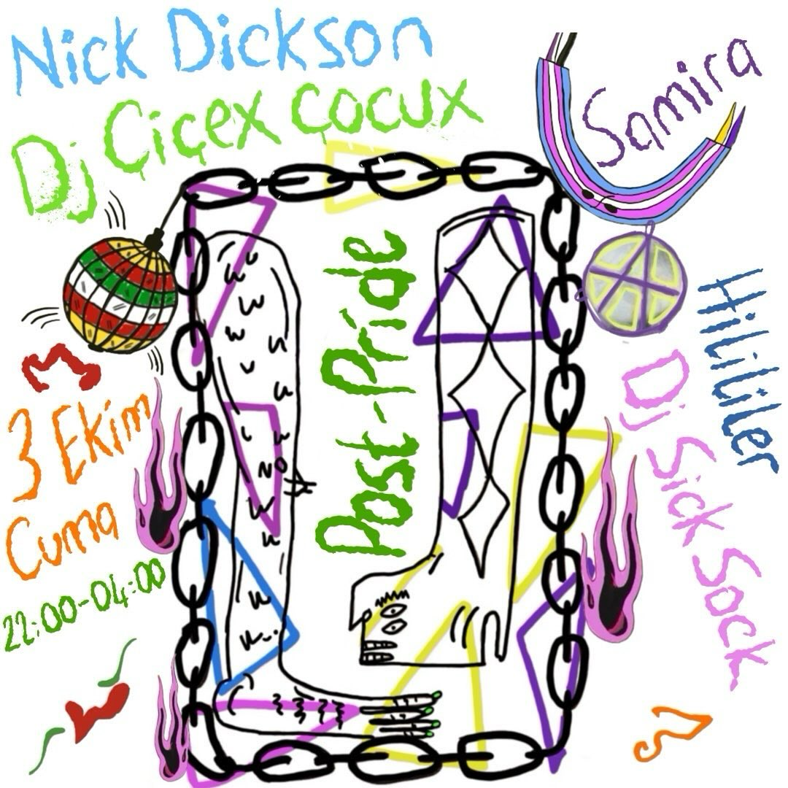

2025-09-24 08:56:00
Lubunya ve sevicisi, dikkat!
Bu bir Trans Onur Haftası’yla dayanışma partisidir. Gel gel lubunya gel lubunya
Öyle bi gece yaşatalım ki, sabahına “anne biz ne yaşadık” densin.
3 Ekim’de topuklar pisti kazıyacak, basslar sahneyi ele geçirecek.
Vur aşkım, süründür aşkım 🫦
Bu gece bizi setleriyle Çiçex Çocux, Hilililer, DJ Sick Sock, Nick Dickson, dans performansıyla Samira çıldırtacak.
📍(#TaksimYerVar #KonumİçinDM)
⏰ (21.30-geç geç geç)
Giriş 100 TL’dir. Opsiyonel olarak 150, 200 verebilirsin. Unutma lubunya bu bir Trans Onur Haftası’yla dayanışma partisidir. Finansal olarak sürdürülebilirlik için dayanışmaya ihtiyacımız var.
Partiye gelemiyor ve destek olmak istiyorsan üzülmeni istemeyiz çünkü askıda bilet uygulamamız mevcut ayol. DM’den ulaşabilirsin bize.
Aşkım biliyorsun ki son 5 yıldır mekansızız ve bu sebepten birbirimize temas edemiyoruz. Anlaştığımız mekanlarla da orta yolu bulmaya çalışıyoruz. Bu gecede 1 saat Erasmuslu cisheterolar da mekan da olacak. Ama biz de güvenliği sağlamak için orada olacağız.
Bu pistte her şey olur, bir şey olmaz: senin yokluğunun fark edilmemesi. lubunyam yokluğun dedikodu olur, bizden söylemesi.
